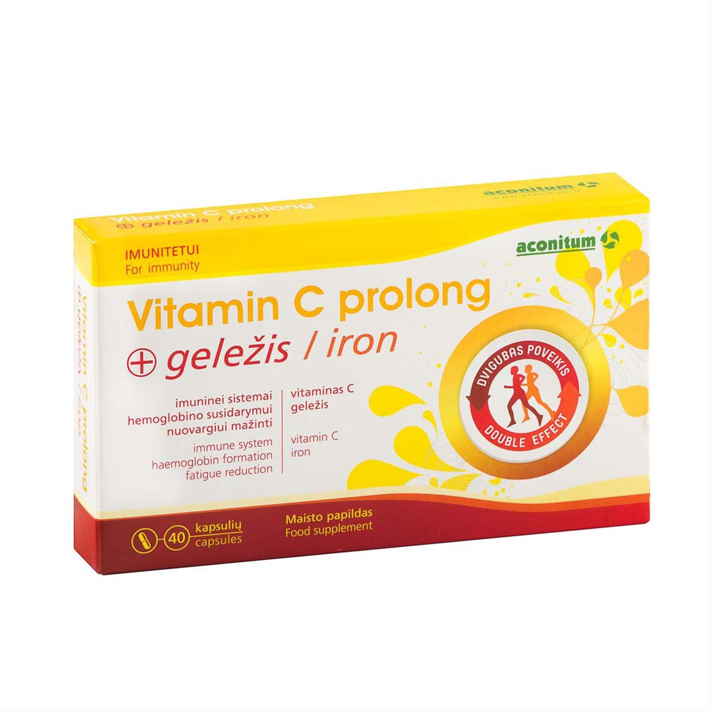

Geležies sirupai, tabletės, kapsulės vaikams ir suaugusiems.
 Pirkite internetu Apie mus Straipsniai KMI+370 382 33014
Pristatymas Pagalba Lietuvių Lietuvių English Русский Akcijos Visivaistai Visi vaistai Visi kategorijos produktai Receptiniai vaistai Nereceptiniai vaistai Kompensuojami vaistai Akims Ausims Nuo alergijos Antiparazitiniai Burnos ertmės ligoms Nuo cukrinio diabeto Homeopatiniai Kvėpavimo takams Lytinę ir šlapimo sistemas veikiantys Nervų sistemą veikiantys Onkologiniai Odai Nuo peršalimo Raumenų ir skeleto sistemas veikiantys Skausmą, karščiavimą mažinantys Sistemiškai veikiantys hormonai Sistemiškai veikiantys priešinfekciniai Širdį, kraujagysles ir kraujotaką veikiantys Virškinimo sistemą veikiantys Vitaminai ir mineralinės medžiagos Įvairūs vaistiniai preparatai Populiariausi vaistai Detralex 500 Ibumetin 400 Paracetamolis Sanitas Rehydron Optim Panangin Neurorubine Forte Tavegyl 1mg Umckalor Influcid Aspirin Cardio Ranigast Gelomyrtol forte Ibuprom 400 Aspirin Cardio Milgamma N Otipax ausų lašai Dolmen tabletės Ibuprom 200 Loperamidum Ibuprom Express Orlistat Polpharma Dolmen granulės Smecta 3g Mezym 10000 Nurofen Forte Orange Nurofen Forte Strawberry Gripex Canesten Paxeladine Grivix 1mg Helmintox 250 Enterol Smecta Neocitramonas Ibugard Paracetamol Actavis Vaistų pavadinimas 0 - 9 A B C Č D E F G H I Y J K L M N O P R S Š T U V Z Ž Q W X Veiklioji medžiaga 0 - 9 A B C Č D E F G H I Y J K L M N O P R S Š T U V Z Ž Q W X Vitaminai ir
maisto papildai Vitaminai ir maisto papildai Visi kategorijos produktai Akims Atminčiai ir smegenų veiklai Antioksidantai Sergantiems cukriniu diabetu Energijai Folio rūgštis Imuninei sistemai Kepenims Kojų venoms Kvėpavimo takams Moterims Multivitaminai Nakvišų aliejus Nervų sistemai Odai, plaukams, nagams Organizmo valymui Paaugliams Padidintam fiziniam krūviui Probiotikai, prebiotikai Sąnariams Svorio kontrolei Šlapimo sistemai Širdžiai ir kraujagyslėms Virškinimui Vaikams Vyrams Vyresniems Žuvų taukai Vitaminai ir mineralai Populiariausi maisto papildai, vitaminai Jodas Multivitaminai VITASIP BioKalis Selenas Chondroitino ir MSM Geležis Homeoligo Folio rūgštis 800 mcg BioKalcis + Vitaminas K Gliukozaminas sąnariams Kalcis ir magnis Chromas 200 mcg Mollers žuvų taukai Tribumen Cinkas 15 mg Vitaminas A+E 800 mkg Vitaminas D3 Vitaminas C 500 mg Kofermentas Q10 Gintaro rūgštis Himalaya Cystone Melatoninas OILESEN Vitaminas D3 1000 Feroglobin Cantalin micro Urinal kapsulės tecnoFER BAMBINI Urinal Akut bioMagnesium Cemio Gemzė Chromas 200 Sorbex Evelor resveratrolis Pomi-T AngioCell Plus Wellwoman Sport Wellman Padma Hepaten Omega-3 kapsulės PROfertil kapsulės Lactosolv kapsulės Gotu kola kapsulės Neurozan Nakvišų aliejus Visionace akims Ocutein Forte kapsulės Perfectil Platinum Collagen Skin Drink Perfectil Platinum Collagen Hair Drink Maisto papildų, vitaminų pavadinimas 0 - 9 A B C Č D E F G H I Y J K L M N O P R S Š T U V Z Ž Q W X Sudėtinė medžiaga 0 - 9 A B C Č D E F G H I Y J K L M N O P R S Š T U V Z Ž Q W X Kosmetika
ir higiena Kosmetika ir higiena Visi kategorijos produktai Apsauga nuo saulės Asmens higienos gaminiai Burnos higienos priemonės Kojų priežiūros priemonės Kūno priežiūros priemonės Plaukų priežiūros priemonės Rankų, nagų priežiūros priemonės Kempinės, šukos, žirklės ir kt. Repelentai, erkių išėmėjai Veido priežiūros priemonės Populiariausia kosmetika bei higienos priemonės Uriage lūpų pieštukas BIOK Dermatology lūpų balzamas sausai / labai sausai odai BIOK Dermatology kūno kremas išsausėjusiai, jautriai odai Margarita naktinis veido kremas su šermukšniais Margarita šampūnas nuo plaukų slinkimo Avene Cleanance prausimosi gelis Avene terminis šaltinio vanduo Avene švelnus odos šveitiklis Avene Cleanance Hydra raminantis kremas Kakės Makės muilas Babe Body nuo saulės Sudocrem kremas ABC arbatmedžių aliejus ALPINO nuospaudoms Eludril skalavimo skystis Sudocrem Care Repelentas Bens Remescar spider veins Acetocaustin karpoms Aloe Vera gelis Scholl nuo grybelio Mama ir
vaikas Mama ir vaikas Visi kategorijos produktai Diagnostikos testai PMS Kūdikiams Nėščiųjų ir po gimdymo moterų prekės Prekės vaikams Populiariausi produktai mamai ir vaikui Pataisų sporų milteliai Sperm O.K. vyrų vaisingumo testas Oilatum vaikiškas šampūnas Himalaya pudra kūdikiams Johnson's Baby Bedtime muilas Pregnacare kremas Happy sauskelnės BabyOno Anticolic žindukas BabyOno Breast rankinis pientraukis Pregnacare Breast feeding Pregnacare Conception Maria Lactation kapsulės Kontraceptinės
priemonės Kontraceptinės priemonės Visi kategorijos produktai Prezervatyvai Lubrikantai Populiariausios kontraceptinės priemonės DUREX Play Aloe Vera 2 in 1 lubrikantas DUREX Play Feel klasikinis lubrikantas Prezervatyvai DUREX Classic Prezervatyvai DUREX Performax Intense Prezervatyvai DUREX Invisible Extra Sensitive Prezervatyvai One Touch Dotted Prezervatyvai One Touch Lights Prezervatyvai One Touch Romantic Arbatos ir
vaistažolės Arbatos ir vaistažolės Visi kategorijos produktai Akims Burnai skalauti Cholesteroliui Cukraus kiekiui reguliuoti Energijai Hemorojui Imuninei sistemai J. Balvočiūtės žolės Kitos arbatos ir vaistažolės Kraujavimui stabdyti Moterims Nervų sistemai Odai, plaukams, nagams Peršalimas, gripas, kosulys, temperatūra Prostatai Sąnariams Skausmą mažinančios Smegenų veiklai Svorio kontrolei Širdies ir kraujotakos sistemai Šlapimo sistemai Uždegimams Vaikams Virškinimo sistemai Augaliniai ir eteriniai aliejai Populiariausios arbatos bei vaistažolės Ajerų šakniastiebiai Karčiųjų kiečių žolė Hemoro žolelių arbata Meškauogių lapai Senų lapai Ramunėlių žiedai Medetkų žiedai, žolelių arbata Debesylų šaknys Prostaset žolelių arbata Bronchos Forte žolelių arbata Gripolis arbata vaikams Neuro-3, žolelių arbata Kniurkio arbatėlė, žolelių arbata vaikams nuo 9 mėn. Erškėčių vaisiai Gudobelių vaisių žolelių arbata Linų sėklos Kadagių vaisiai Šalavijų lapai Aviečių lapai Dilgėlių lapai Relaxherba arbata vaikams su levandų ir verbenų žiedais Gripherba arbata vaikams su ežiuolėmis Smiltyninių šlamučių žiedai Melisų lapai Pipirmėtės lapai Didžiųjų ugniažolių žolė Miškinių sidabražolių šakniastiebiai Ąžuolų žievė Takažolių žolė Kraujažolių žolė Medetkų aliejus Našlaičių žolė Sukatžolių žolė Viržių žolė, 100 g Arbata Atšalus orams 1 g Ekologiškos vaistinės taukės šaknys Ekologiškas ąžuolo gilių gėrimas Ekologiška pievinių akišviečių žolė Ekologiška citrininių čiobrelių žolė Fito Detox arbata Lakišių žolė Čiobrelių žolė Melisų žolė Kmynų vaisiai Valerijonų šaknys Medicinos
prekės Medicinos prekės Visi kategorijos produktai Švirkštai Sauskelnės, kelnaitės ir įklotai Akims, nosiai, gerklei Dezinfekcinės priemonės Gaminiai iš gumos, latekso Kojinės elast., kelnaitės tinkl/elast. Laboratoriniai indai Ligonių priežiūros ir slaugos priemonės Matuokliai ir kiti el. prietaisai Testai Tvarsliava Šaldančios bei šildančios priemonės Įvairaus veikimo preparatai Populiariausios medicinos prekės Tena Skin Lotion odos losjonas Super Active Ice Spray šaldantis purškalas Microlife stetoskopas ST72 Geratherm Non Contact bekontaktis termometras Medrull Natural Care pleistrai, 1.9 x 7.2 cm Nailner teptukas nagų grybeliui gydyti Bekontaktis termometras NC 200 Microlife Microlife inhaliatorius Neb 50B Microlife Šildymo paklotas FH422 Microlife kraujospūdžio matuoklis AG1-20, aneroidinis Mycosan serumas + 10 dildžių Microlife FH 80 šildymo pagalvėlė Mycosan Protect apsauginės putos nuo grybelio Tena Set pirštinės Washglove Axol Procto kremas Tena Men Pants Plus Hedrin tirpalas nuo utėlių Herbamedicus šildantis arklių balzamas Tena Bed Normal paklotai Vaxol ausų purškalas Moteriškos kelnaitės Gentle Day Teens Bikini (M) Kitos
prekės Kitos prekės Visi kategorijos produktai Alaus mielės Įvairios prekės Mineralinis Produktai be gliuteno Spec. paskirties maisto produktai Saldikliai, gliukozė Pastilės ir žirneliai Žiedadulkės ir bičių produktai Javainiai Nosinaitės Spec.med. paskirties dietinis maistas Įvairios prekės Malti linų sėmenys Bioflax Saldiklis Canderel Intact-Traubenzucker gliukozės tabletės, pasiflorų skonio, 40 g OralZym kramtomosios pastilės CuraMed pastilės gereklei Icelander gerklės pastilės Ledinukai Em-eucal Wildkirsche 75g Gliukozės su vitaminu C egzotinių vaisių kvapo Bičių duonelė, granulės Žiedadulkių tabletės su bičių pikiu ir vitaminu C Propolio tinktūra Fresubin Original neutral medicininės paskirties maisto produktas Pirmos pagalbos kaukė, vienkartinė Vamzdelis orofaringinis Nr. 1 (ISO6,5) Propodezas su avietėmis Isla-Moos pastilės gerklei Gell Royal (Bičių pienelis) 1000 ampulės Propolio ampulės 10ml Visos
kategorijos Prisijungti arba Registruotis Prekių krepšelis Žiūrėtos prekės Patinkančios prekės Pagalba Pagalba D.U.K Registracijos sąlygos Siuntimas ir pristatymas Siuntimas į užsienį Nemokamas pristatymas pasirinktu adresu Grąžinimo sąlygos Garantija Kaip pirkti Atsiskaitymas Lojalumo taškai Rašykite mums Kontaktai Vaistinės Kūno masės indekso skaičiuoklė Straipsniai sveikatos temomis Straipsniai sveikatos temomis Dienos patarimai Kraujotakos sistema Virškinimo sistema Imuninė sistema Nervų sistema Kvėpavimo sistema Šlapimo šalinimo sistema Oda, plaukai, nagai Mityba Vyrų ligos Vaikų ligos Peršalimo ligos Alerginiai susirgimai Traumos, skausmas Įkandimai Mama ir mažylis Sveika gyvensena Praktiški patarimai Viskas apie vitaminus ir mineralus Vaistinių tinklas Lietuvoje Apie mus Naujienų prenumerata Lietuvių Lietuvių English Русский {{total}} - {{qnt}} vnt. Pirkti ir apmokėti Prisijungti
arba Registruotis Menu Vitaminai ir maisto papildai Vitaminai ir mineralai Geležies preparatai Vitaminai ir mineralai 1 - 30 / 37 filtras:
Geležies preparatai Daugiau...
Ieškote populiariausių geležies preparatų? Geležis reikalinga pernešti deguoniui, ji yra...
kraujo baltymo hemoglobino ir kitų fermentų sudedamoji dalis. Geležis dalyvauja įvairiose žmogaus organizmo ląstelėse vykstančiose biocheminėse reakcijose, svarbus neurologiniams procesams. Didelis geležies preparatų pasirinkimas, prieinama kaina ir greitas pristatymas – kaip tik Jums!
Rodomos prekės nuo 1 iki 30 , iš viso prekių 37 vnt. Eiliškumas Didžiausia nuolaida Didžiausia nuolaida Mažiausia nuolaida Didžiausia kaina Mažiausia kaina Pavadinimas A-Z Pavadinimas Z-A Rodyti po 30 30 15 60 75 90 120 -30% BioFerrum Acerola geležies milteliai geriamajam tirpalui, N28 Kaina € 8,15 € 11,64 Į krepšelį FEROGLOBIN sirupas, 200 ml Kaina € 11,51 Į krepšelį FEROGLOBIN, 30 kapsulių Kaina € 11,64 Į krepšelį FEROGLOBIN Plus skystis su geležimi, 200 ml Kaina € 11,91 Į krepšelį ULTRA Iron tabletės, geležies preparatas, N30 Kaina € 6,59 Į krepšelį TecnoFER Plus 30mg kaps.N20 Kaina € 15,78 Į krepšelį Floradix skystis, 500 ml Kaina € 19,88 Į krepšelį Hematogenas klasikinis, batonėlis, 40 g (Stada) Kaina € 0,67 Į krepšelį Richter-FerroBio 18mg tabletės N40 Kaina € 18,91 Į krepšelį Hematogenas 40g glaistytas juoduoju šokoladu Kaina € 0,85 Į krepšelį Floradix Floravital skystis, 250 ml Kaina € 11,41 Į krepšelį Ferromax Tonic Strong skysčio pavidalo geležis, 500 ml Kaina € 15,91 Į krepšelį SmartHit IV Ferrum kapsulės, N30 Kaina € 18,15 Į krepšelį Hematogenas Vita+ su linų sėmenimis ir vitaminais, 50 g Kaina € 0,85 Į krepšelį Marsiečiai hematogenas su multivitaminais ir mineralais 30g Kaina € 0,67 Į krepšelį Marsiečiai hematogenas su vitaminu C ir D 30g Kaina € 0,67 Į krepšelį Floradix skystis, skystosios geležies formulė, 250 ml Kaina € 11,41 Į krepšelį Hematogenas Vita+ Rolls, hematogeno rutuliukai N5 (65g) Kaina € 2,34 Į krepšelį Eisen Vital F Direct maisto papildas 10ml N20 Kaina € 13,61 Į krepšelį Hema2gen ENERGY su taurinu ir kofeinu, hematogenas, 45g Kaina € 0,85 Į krepšelį SmartHit IV Ferrum Liquid 150ml Kaina € 15,13 Į krepšelį Floradix Herz-Activ 250ml Kaina € 18,60 Į krepšelį Geležis Homeoligo, N90 Kaina € 3,51 Į krepšelį Ferromax tabletės, N120 Kaina € 7,97 Į krepšelį Tecnofer Bambini geležies lašai vaikams, 30 ml Kaina € 15,77 Į krepšelį TecnoFER šnypščiosios geležies tabletės, N30 Kaina € 15,77 Į krepšelį Hematogenas Ekstra Geležis, 30 g (Stada) Kaina € 0,67 Į krepšelį Hematogenas plius su džiovintomis slyvomis 40g (Stada) Kaina € 0,67 Į krepšelį Hematogenas Vita+, 50 g Kaina € 0,85 Į krepšelį Hematogenas su linų sėmenimis, batonėlis, 40 g (Stada) Kaina € 0,67 Į krepšelį 1 2 Nemokamas pristatymasperkant už € 25.00 Atsiėmimo galimybė
86 taškuose visoje Lietuvoje Naujienų prenumerata
Dovanų 33 lojalumo taškai! MANOVAISTINE.LT
Vaistinių tinklas Lietuvoje svarbi informacija apie darbą,
karantino metu! Klauskite +370 382 33014 Atsiskaitymai Įdomu
© 2000-2020 UAB "Mano vaistinė", Į.k.: 174324562, Klonėnų vs.1, Širvintų r.sav., +370 382 33014, info@manovaistine.lt, www.manovaistine.lt - internetinė vaistinė. UAB Entafarma, Į.k. : 174443844, Klonėnų vs.1, Širvintų r.sav., +370 382 33014, info@manovaistine.lt. Visos teisės saugomos. Privatumo politika , Pirkimo taisyklės ir sąlygos , Pristatymas , Grąžinimo sąlygos . Vaistinių tinklas Lietuvoje. Internetinė vaistų prekyba. Pirkite vaistus ir maisto papildus neišeidami iš namų. Be UAB „Mano vaistinė” sutikimo draudžiama kopijuoti ir platinti svetainėje esančią informaciją.
Valstybinė vaistų kontrolės tarnyba prie Lietuvos Respublikos sveikatos apsaugos ministerijos . Žirmūnų g. 139 A, Vilnius, tel. 8 800 73568, vvkt@vvkt.lt, www.vvkt.lt . Alternatyvus vartotojų ginčų sprendimas .
UAB „ENTAFARMA” maisto tvarkymo subjekto pažymėjimo Nr. 21
Gal ieškote...? Maisto papildai "Beres drops plus" | Maisto papildai "Wellkid chewable" | Maisto papildai "Visionace" | Maisto papildai "Wellwoman" | Maisto papildai "Pregnacare" | Maisto papildai "Osteocare" | Maisto papildai "Neurozan" | Maisto papildai "Menopace" | Maisto papildai "Immunace" | Maisto papildai "Feroglobin" | Maisto papildai "Cardioace" | Maisto papildai "AngioCell Plus" | Maisto papildai "Lepicol" | Maisto papildai "Vitabiotics" | Vaistai "Nimesil" | Vaistai "Ospamox" | Maisto papildai "Wellteen" | Maisto papildas "Wellman Sport" | Maisto papildas "Wellman Prostace" | Maisto papildas "Wellman Conception" | Maisto papildas Wellwoman 50+ | Maisto papildai "Liverel" | Maisto papildai "Pregnacare Conception" | Maisto papildai "Pregnacare Breast Feeding" | Maisto papildas "Hairfollic Woman" | Maisto papildai "Zippy" | Preparatas nuo nagų grybelio "Scholl" | Maisto papildai "Perfectil" | Maisto papildas "Mamita" | Maisto papildai "Profertil" | Konservantų (maisto priedų) žinynas Konservantai.lt | Vitaminai "Neurozan Plus" | Vitaminai ir mineralai "Diabetone" | Maisto papildas "Immunace Extra" | Maisto papildas "Perfectil Platinum" | Maisto papildas "Wellwoman Sport" | Maisto papildas "Jointace Sport" | Maisto papildas "Visionace Plus" | Maisto papildas "Cardioace Plus" | Maisto papildas "Wellman 50+" | Maisto papildas "Perfectil Plus Skin" | Maisto papildas "Ultra Ginkgo & Ginseng" | Maisto papildas "Feroglobin Plus" | Maisto papildas "Lepicol" | Maisto papildas "Pregnacare Plus" | Maisto papildas "Omega-H3" | Maisto papildas "Ultra Red Krill Oil" | Maisto papildas "Menopace Plus" | Maisto papildas "Wellkid" | Maisto papildai "Wellman" | Vitaminai ir maisto papildai "Osteocare" | Maisto papildai Walmark visai šeimaiSvetainėje naudojami slapukai sklandžiam jos veikimui, naršymo patirties gerinimui, rinkodarai. Daugiau apie naudojamus slapukus ir kaip jų atsisakyti - privatumo politikoje.